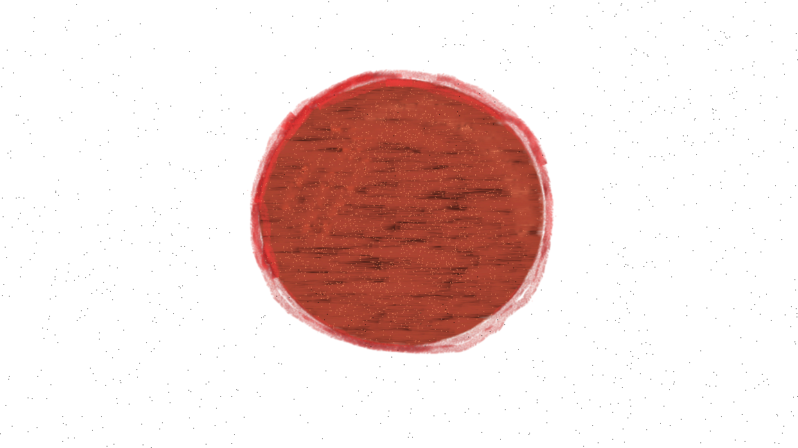

Stellar Nebula
Stellar nebulae usually have a radius of around 1 light year and
contain of gas of about 0.3 solar masses.
All stars are formed from stellar nebula, which is a group of gas,
dust, helium, and hydrogen. Gravity will slowly pull the dust and
gas together. As these particles begin to clump together, the
gravity gets stronger. When the collection of gas and dust become
large enough, it will collapse from its own gravity and become a
hot core for a star.

Protostar
Protostars can be from 0.01 to hundreds of solar masses.
The
hot core from the gas and dust in the stellar nebula becomes a
protostar. Even though the core is hot, it is not ready for Fusion
and Fission. The protostar is surrounded by gasses that sometimes
get blown away by the magnetic field that forms when it rotates.

Main Sequence Star
A main sequence star is the most stable part of the star. This
phase will last the longest.
When the protostar spins,
it will heat up to a million degrees, where it will start nuclear
fusion. When creating fusion, the force will push against gravity
and create a star. 90% of the universe is made of Main sequence
stars. They can be a tenth of the sun mass or 200 times the sun
mass, they can also live for millions to billions of years.

Red Giant
When a main sequence star is less than 8 times of the Sun’s mass,
it will start to collapse due to exhausted hydrogen.
The
gravity will push against the force of fusion, but squeezing the
core will increase temperature and pressure. When there is a lot
of temperature and pressure, Helium will start to turn into
carbon, which releases energy. The hydrogen fusion will cause the
star’s outer layer to expand and turn a red giant, which can
appear more orange than red.
Planetary Nebula
As the red giant begins to die out, the star begin to contract and radiate energy. The expelled gas from the radiated energy will start to Ionize, creating glowing rings around the core. On the outer layers, the molecules will cool and turn into metals. This “dying star” phase only lasts about a thousand to ten thousand years.